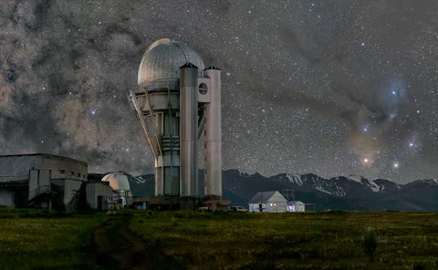
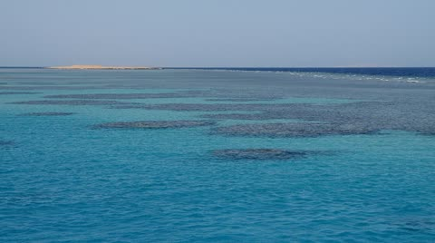
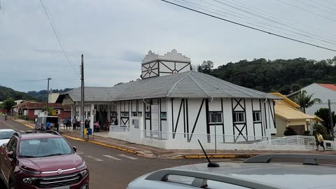
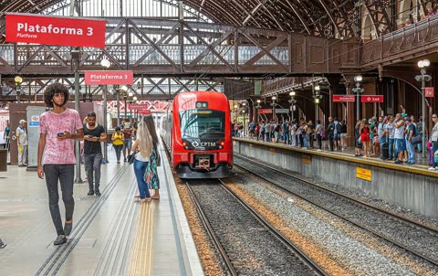

Laboratório urbano testa sensores de qualidade do ar em 40 escolas
Sensores instalados em 40 escolas medem material particulado a cada cinco minutos; dados vão orientar políticas públicas.
Leia mais...Sensores instalados em 40 escolas medem material particulado a cada cinco minutos; dados vão orientar políticas públicas.
Leia mais...
Sessões de sexta e sábado têm 40 vagas e incluem observações guiadas com telescópio de 1,2 metro.

Expedição registra 14 espécies em áreas profundas e propõe reserva de 18 mil km²; dados serão abertos ao público.

Mutirão aplicou 12,4 mil doses em três dias e elevou a cobertura de idosos; áreas rurais ainda estão abaixo da meta.

Trecho de 84 km liga a capital a Serra Alta em 48 minutos; operação assistida começou com quatro viagens diárias.